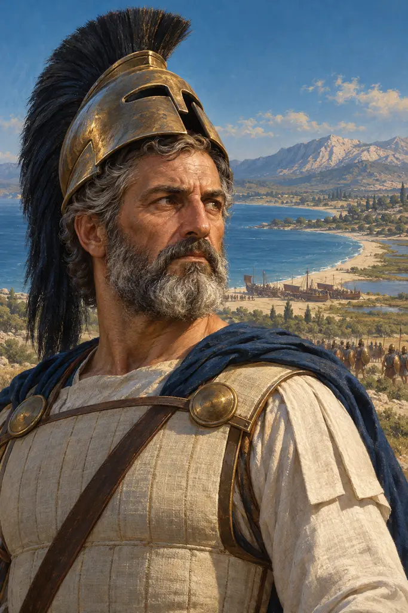
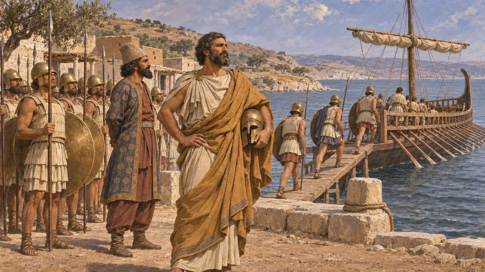
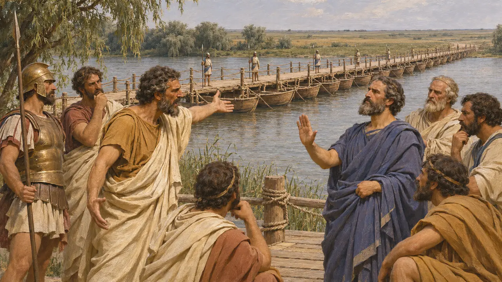
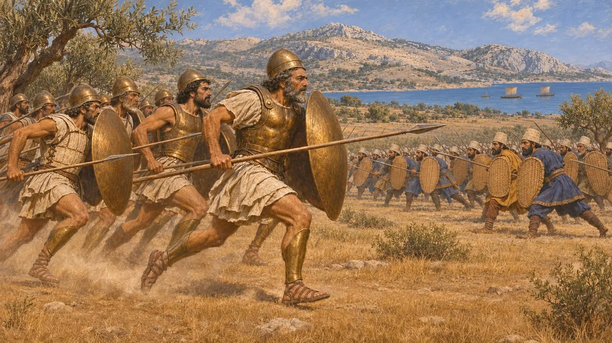
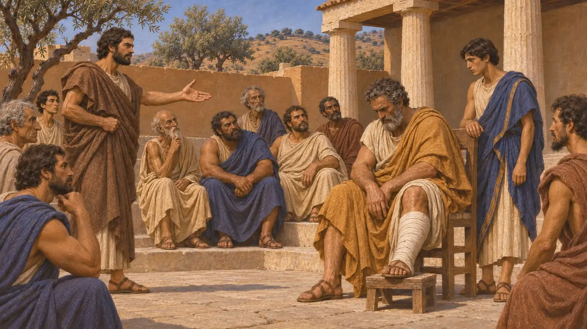
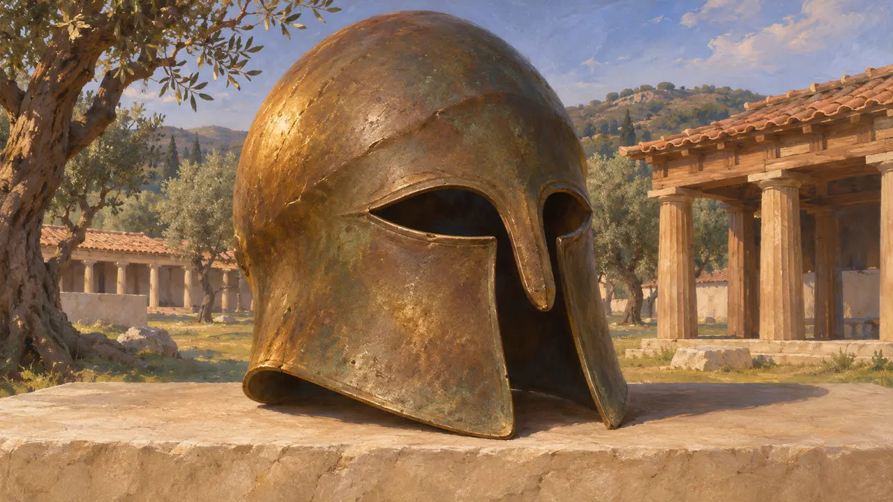

Milcíades
Nobre ateniense, vassalo persa no Quersoneso, general em Maratona, falecido por volta de 489 AEC
No jogo: Nível 6: A Ponte de Barcos
Milcíades, filho de Címon, era um aristocrata ateniense que governou o Quersoneso Trácio como tirano sob suserania persa e depois fugiu para Atenas quando a Revolta Jônia fracassou. Em 490, como um dos dez generais atenienses, insistiu em travar batalha em Maratona, e Heródoto lhe atribui a vitória sobre o exército de Dátis e Artafernes.
No jogo: A nota da crônica do jogo o apresenta como o general que liderou a investida em Maratona. Também trata a história da ponte do Istro como fato comprovado, embora muitos historiadores duvidem desse relato.

Senhor do Quersoneso
Relato antigoHeródoto conta que os pisistrátidas, senhores de Atenas, enviaram Milcíades ao Quersoneso, a península do lado europeu do Helesponto, onde sua família já detinha o poder. Ali governou como tirano, manteve quinhentos mercenários e desposou Hegesípile, filha do rei trácio Oloro. Quando Dario avançou sobre a Europa, por volta de 513, Milcíades tornou-se súdito persa e navegou com os demais tiranos gregos na campanha contra os citas.
Herodotus 6.34-41; Herodotus 4.137

A história da ponte sobre o Istro
DisputadoHeródoto relata que, enquanto os jônios guardavam a ponte de barcos de Dario sobre o Istro, Milcíades os instou a destruí-la e deixar o Rei isolado entre os citas. Histieu de Mileto argumentou que os tiranos deviam seu poder à Pérsia, e a ponte foi mantida. Muitos historiadores suspeitam que a história foi difundida mais tarde, talvez quando Milcíades foi julgado em Atenas por sua tirania, para apresentá-lo como inimigo da Pérsia.
Herodotus 4.137; Herodotus 6.41; Herodotus 6.104

Fuga e a batalha de Maratona
Relato antigoEm 493, enquanto a frota fenícia reconquistava as costas rebeldes, Milcíades fugiu para Atenas. Seu filho Metíoco foi capturado, e Dario lhe deu uma esposa persa e uma propriedade. Eleito general, Milcíades convenceu o polemarco Calímaco a dar o voto decisivo pela batalha. Heródoto conta que os atenienses avançaram em corrida e que cerca de 6.400 homens do Rei morreram, contra 192 atenienses. O número de baixas atenienses é amplamente aceito; o dos persas, nem tanto.
Herodotus 6.41; Herodotus 6.103-117

Paros e um fim desonroso
Relato antigoDepois de Maratona, Milcíades pediu navios aos atenienses sem dizer para onde os levaria e zarpou contra a ilha de Paros. O cerco fracassou e ele feriu a perna. De volta a Atenas, foi processado por Xantipo e multado em cinquenta talentos. Morreu pouco depois, quando o ferimento gangrenou, e seu filho Címon pagou a multa.
Herodotus 6.132-136

Um elmo em Olímpia
Nos registrosUm elmo coríntio de bronze, escavado no santuário de Zeus em Olímpia, traz uma inscrição que diz que Milcíades o dedicou a Zeus. Costuma ser identificado com este Milcíades e pode ter vindo de uma de suas campanhas. É um dos poucos objetos de sua própria época que o nomeiam, e hoje está no museu de Olímpia.
Inscribed helmet from Olympia, Olympia Archaeological Museum
Fontes
- Herodotus, Histories, books 4 and 6
- Inscribed helmet of Miltiades, Olympia Archaeological Museum
- P. Krentz, The Battle of Marathon, 2010
- P. Briant, From Cyrus to Alexander, 2002